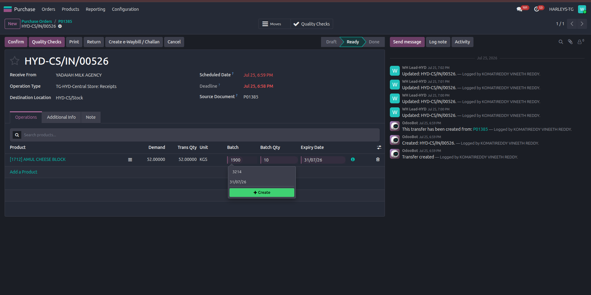
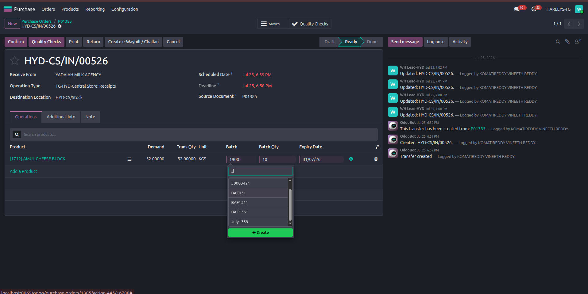
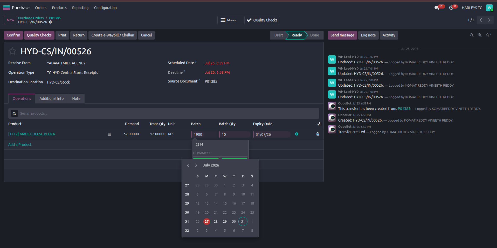
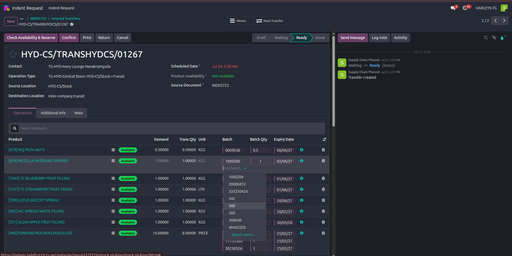
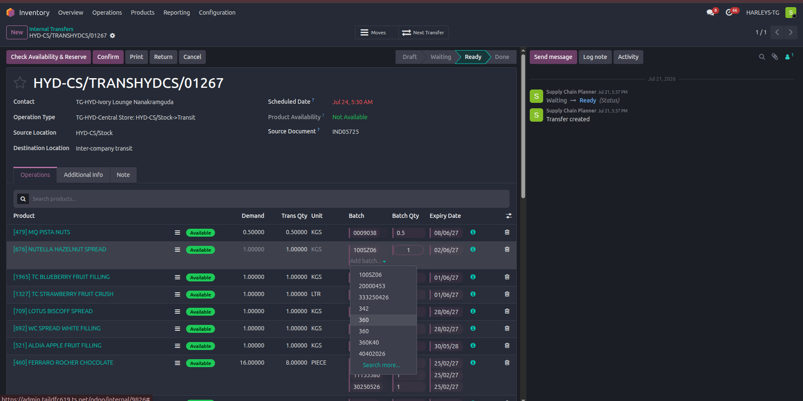
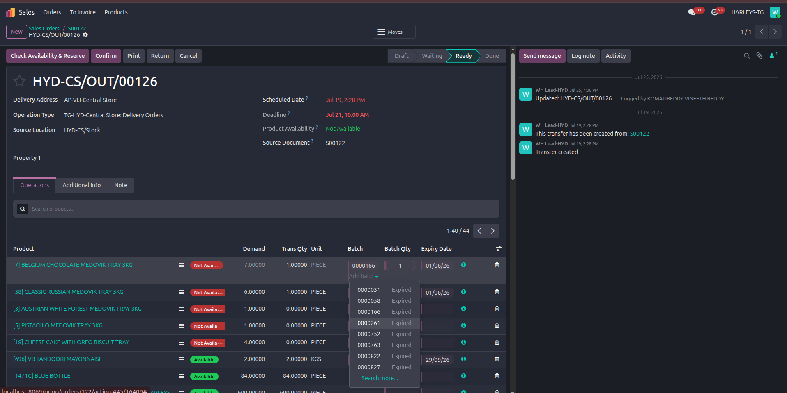

Batch/Lot Tracking on Transfers, Receipts & Deliveries
Every Indent, Internal Transfer, Receipt (GRN) and Delivery now shows Batch, Batch Qty and Expiry Date on its line items. This guide explains what you'll see, where you can create a brand-new batch, and where you can only pick from what already exists.
Audience Warehouse, purchasing, sales and inventory staffReading time ~5 minutes
1. What you'll see on the Operations tab
Whether you're working on an Indent Request's Internal Transfer, an Inventory internal transfer, a Purchase Receipt, or a Sales Delivery, the Operations tab shows the same three columns on each line item:
Column
What it means
Batch
Which batch/lot number this line is drawn from. You can add, pick, or remove a batch here.
Batch Qty
How much of that batch is being moved. Type the number directly.
Expiry Date
The batch's expiry date, shown for reference (dd/MM/yy format).
These columns only appear on the four document types above — you won't see them on other kinds of stock moves.
2. Receiving goods: this is the only place to create a new batch
When you open a Purchase Order's Receipt (GRN) and click "Add" in the Batch column, you get a popover that does two things at once: it searches your typing against batches that already exist for that product, and it offers a "+ Create" option to mint a brand-new batch number.
1Type a batch number to search or create

Screenshot: Batch popover on a Receipt, with an existing batch and a "+ Create" option
purchase_orders_create_new_batch.png — the popover shows any matching existing batch alongside a "+ Create" button, so you can reuse a batch number or start a new one from the same field.
2See both matches and the create option together while typing

Screenshot: typing shows live search results and the "+ Create" button side by side
purchase_orders_select_if_batch_exists.png — as you type, existing batches that match appear immediately, so you can double-check a batch doesn't already exist before creating a duplicate.
3Set the expiry date when creating a new batch

Screenshot: expiry-date calendar, past dates disabled
purchase_orders_create_new_batch_select_exp_date.png — if the product tracks expiry, you must pick a date here before the batch can be saved. Dates before today are greyed out, so a batch can never be backdated.
Why only here?
Batches physically come into existence when goods are received, so the Receipt/GRN screen is the one place the system lets you create a new batch number. Every other screen only lets you draw down against batches that already exist.
3. Internal Transfers & Deliveries: pick from existing batches
On an Indent Request's Internal Transfer, an Inventory app Internal Transfer, or a Sales Delivery, clicking "Add" in the Batch column opens a simple list of batches that already exist for that product — there's no "+ Create" option on these three flows.
1Indent-originated Internal Transfer

Screenshot: Add batch dropdown on an Indent-originated Internal Transfer, existing batches only
indent_internal_transfers_receipt.png — the dropdown lists batches you can pick from; there's nothing to create here.
2The same record, from the Inventory app

Screenshot: the same transfer opened from Inventory → Internal Transfers
inventory_internal_transfers.png — whether you got here from an Indent Request or straight from the Inventory app, it's the exact same screen and behaves identically.
3Sales Delivery

Screenshot: Add batch dropdown on a Sales Delivery, some batches marked Expired
sales_order_delivery.png — same select-only behavior on a Delivery. Note that batches marked "Expired" still appear in this list and can still be selected — the system doesn't currently hide or block them, so it's worth checking the expiry date yourself before picking one.
4. Once created, a batch is available everywhere
A batch created on a Receipt isn't tied to that one document — the moment it's saved, it's available to pick from on any Internal Transfer or Delivery for that same product, anywhere in the company. You don't need to do anything extra to "make it available" elsewhere; it just is.
Not scoped to a warehouse
A batch created while receiving goods at one location currently shows up in the picker at every other location too, for the same product. If you're moving stock between warehouses, double-check the batch you pick is actually the physical stock you have in front of you.
5. Common questions
Why can't I create a new batch on this Internal Transfer / Delivery?
By design — new batches are only ever created where goods are physically received, on a Purchase Receipt (GRN). Everywhere else, you're drawing down against batches that already exist.
Can I still pick an expired batch?
Yes, today the system doesn't stop you — expired batches still appear in the picker (see §3). Treat the expiry date shown as information to check yourself before selecting one.
Can anyone edit a batch's details after it's created?
Right now, yes — there's no extra permission gate on editing an existing batch's own details (like its expiry date) beyond normal access to the record. A tighter "only a manager can change batch details" rule is a planned change, not yet built.
Who can add or remove a batch from a line item?
Anyone with ordinary access to Lots & Serial Numbers can add or delete a batch row, on any of the four document types, as long as the document isn't already locked/done.